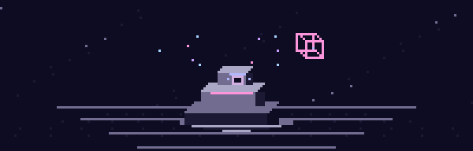
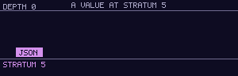

DEPARTMENT OF ALREADY HAPPENED / desk 00v0.3.0 · 2026-11-26

Nothing runs.
A programming language. An unusually permanent filing system.
Install & buryOpen the manualReleases
Please keep all limbs inside the current stratum.
Complaints hatch
You were promised a running program. Understandable.
This desk issues traces. For running, please consult a different universe.
No complaint was sent. This hatch is decorative bureaucracy.
Read this first
A Nether C program is never executed.
It is buried. Burial evaluates it as far as the world will currently allow, and then it stops. What is left behind is a trace: a complete, immutable, content-addressed record of everything that happened, and the holes where the program put a question to the world that nobody has answered yet.
Answering a hole is a separate act. It happens later. Somebody has to decide to do it. It is called exhumation, and it produces a new trace. It does not touch the old one.
Nothing in the ledger is ever revised.
That is the entire language. Everything after this is consequence.
Get nether & bury a program
Take a verified prebuilt v0.3.0 archive (Linux
x86_64, macOS arm64/x86_64) and
SHA256SUMS from Releases, or
build from source:
git clone https://github.com/oddurs/nether-c
cd nether-c
cargo build --release --locked --bin netherThen write a program and bury it:
// hello.nc — there is no main; there is a demand.
U0 greet()
{
"Hello from the nether\n"; // deposited, not printed
}
demand greet();$ nether bury hello.nc
buried hello.nc → efed9b2a depth 0 holes 0 4 nodes
$ nether lamp efed9b2a
Hello from the netherBurial said nothing about the greeting. It cannot. The program has no way to reach your terminal and would not know whether anybody was watching if it did. It left a deposit. Reading it is a second act, and a person had to choose to perform it.
Two commands. Every time. Forever.
THIS IS THE POINT, NOT THE PRICE
A bare string leaves a deposit, not a line on your terminal. Reading it takes a second command. That is the single largest tax the design charges, and it lands in the first thirty seconds of everybody's first program.
Here is what it buys. A Nether C program holds no capability that reaches a log. Not one it is discouraged from using. Not one behind a flag. There is no code path from a running program to your terminal, so there is no such thing as a leak, an accidental debug line left in for a year, or a secret printed at three in the morning by a branch nobody has read since 2021.
You cannot get that by being careful. You get it by not having the door.
The nine things that are true
- The program has already run.You are not going to start it. You
are going to read what is left of it. There is no
run, there is never going to be arun, and it is the one requirement in the whole draft that is frozen — §8.0. - Depth only ever increases.Every value carries a number from 0
to 8: how far into the world its history reaches. Nothing lowers it. Descent is
a decision, and it is the last one you get to make about that value. There is no
ascend— §1.2. - Nothing down here changes.The ledger is shared, but its contents cannot be revised. This is not a safety feature bolted on. It is what the word nether means — §5.4.
- You do not make a value. You find it.Every value already exists at its content address. Allocation is a thing other languages do because they have not worked out that the value was always there. Two programs that compute the same value write the same bytes to the same place and never have to agree about it first — §7.2.
- Nothing is printed.A bare expression is deposited into the ledger. A program holds no capability that reaches a terminal, a log, or you. If you want to see what it left, carry a lamp down and look. This costs you two commands instead of one, forever, starting thirty seconds into your first program. We charge it anyway, and §90.1 says so.
- Entropy is the deepest recordable sin.Stratum 7. Second from the bottom. Drawn bytes must be recorded: the source alone cannot tell you what they were. You can replay the answer, but you cannot derive it again — §9.7.
- The world's answer is written down before you get it.Not afterwards. Not usually. Before. A witness recorded after the value was returned is a witness that can be lost, and a ledger with a gap in it supports nothing at all — §1.4.
- A refusal is an answer. A mistake is not.The file is missing,
nothing replied, the bytes are not text — those are things the world
said, so they are values, and replay serves them back. Calling
muston one is a bug in your program, and a burial that hits one stops. There is no way to catch it, and there is not going to be one: a mistake you can catch is a mistake you will ignore — §9.9. - You may carry a shade up. You may not look at it on the way.Orpheus could have kept her — §1.6.
The nine strata

Every value carries a depth. Depth composes by
max: a thing built from parts is exactly as deep as its deepest
part.
0 is pure. Arithmetic and data. No world at all. Pure code does not survive burial, because there is nothing left of it but its answer.
1 reads the ledger. 2 reads an environment you froze in advance. 3 reads the disk. 4 writes it. 5 reads the network. 6 writes it.
7 is entropy.
8 is foreign code, whose history the ledger cannot keep. A trace that reaches 8 is marked, permanently, and everything downstream of it is marked too. It may never again claim to be replayable.
Stratum 8 is in the lattice because a language that cannot call C cannot be adopted, and an unadopted language proves nothing about whether its ideas were any good. It is at the bottom because it is the only stratum that breaks the promise rather than deepening it. It is the weakest part of this design and §90.2 says that in those words.
Watch the picture. The marker falls and the bands it has passed stay lit behind it. That is the whole of §1.2: no step ever lowers a depth. Read §01 for what each stratum grants, what it costs, and what the implementation is obliged to write down the moment you reach it.
The Orpheus rule

Depth never decreases. So how does anything ever come back up?
You carry the record, not the thing. seal gives you a
cairn — a content address — and a cairn is always at
depth 0, because a name is pure no matter what it names. shade
gives you the value itself, opaque. You may store it, seal it, compare it, pass
it on. You may not look inside it.
Shade<Bytes> reply = descend net { shade must(get("https://example.invalid/index.json")) };
Cairn witness = seal reply; // legal: Cairn@0
I64 n = len(look(reply)); // not from up here you don't$ nether bury stamp.nc
error: cannot look at a shade from stratum 5 at depth 0
--> stamp.nc:14:21
|
14 | I64 n = len(look(reply));
| ^^^^^^^^^^^ this shade came from `get` at stratum 5
|
= the value is here, but you are not. Wrap the look in `descend net { … }`.YOU MAY CARRY A SHADE UP OUT OF ANY STRATUM.
YOU MAY ONLY LOOK AT IT BY GOING BACK DOWN.
It is one comparison. The check is local, it does not spread, and the error
names both depths and the exact descend that would fix it. Two more
dramatic versions of this rule were written down and thrown out; both are
recorded in
§90.2,
because a design document that lists only its advantages is marketing.
What a hole is

Burial evaluates everything it can and stops at the first thing it has to ask the world. That question becomes a hole, and the hole is carried in the trace along with the whole dependency graph that leads to it.
A hole is always a question the world can answer immediately. Its arguments
are already buried: read(concat(dir, name)) does not leave a hole
containing a concat. It leaves a hole containing the finished
path.
$ nether bury build.nc
buried build.nc → 76c4b655 depth 3 holes 1 4 nodes
hole ① read("main.nc") stratum 3 disk
$ nether exhume 76c4b655 --grant disk --root .
① read("main.nc") → 29 bytes 6940fecb
sealed 76c4b655 + 6940fecb → bb9ed429 depth 3 holes 0
$ nether exhume bb9ed429 --replay
identical.Look at the last line of that. Replay holds no capabilities at all. It does not prefer the ledger over the world. It cannot reach the world. A program that fetched something over the network replays on a machine with no network, because the answer was written down before the program ever saw it — §6.7.
And notice that the name changed. Answering a hole does not revise the old trace. The old trace still exists, still has its hole, and still means what it meant.
The six rites
| Rite | What it does |
|---|---|
bury | evaluate as far as the world allows; emit a trace |
exhume | grant a stratum, answer holes, emit a deeper trace |
lamp | carry light down: render a value, or walk its provenance |
cairn | name a thing by its content; check that a name still holds |
strata | which stratum this reached, and the line that took it there |
graft | substitute a subtrace and re-bury only what changed |
Every rite accepts --help and --json
(§8.1);
nether lamp <cairn> --at <byte> inspects a byte offset
directly for editors
(§8.4.1).
THERE IS NO NETHER RUN
It exits 64 and tells you what to use instead. It is frozen alongside §7.1 and §7.3.1, and written into §8.0 so that it is a rule and not a joke, and so that anybody proposing to add it has something to argue against.
Tools, proofs & trust
- The Necropolis (web/necropolis/):
local WASM trace browser with no server and no world capabilities. Build and
serve it with
scripts/task wasm && scripts/task serveand open/web/necropolis/. - Vim and Neovim (tools/vim/nether.vim):
stateless editor adapter over
nether lamp <cairn> --at <byte>(§8.4.1). Bind a trace with:NetherTrace <cairn>, then pressKfor depth and type,gdto jump to thedescendorigin, andgpfor backward provenance. - Proof kernel and differential fuzzing (proof/): in-tree LCF proof kernel with zero external dependencies proving depth-lattice soundness, Orpheus premise sufficiency and necessity, residual staging equivalence, and canonical encoding injectivity, paired with 10,000,000 differential fuzz programs (§90.7).
- Security and reproducible builds: seven trust boundaries
and known gaps in
SECURITY.md
(
forbid(unsafe_code)outsidenether-foreignandnether-wasm), byte-identical release binaries checked on a second runner (reproducible builds), and the release compatibility contract (§0.6.1).
On the palette
Bruise and bloom. Indigo rooms, rose signals, and a little cold light where the world gets in. The nine strata move from periwinkle through violet to pink; their numbers carry the meaning, even without colour.
- VOID
- The room itself
- SEDIMENT
- Panels and shelves
- GHOST
- Things worth reading
- BLOOM
- Titles and signals
- AFTERIMAGE
- Paths elsewhere
- ECTOPLASM
- A favourable answer
The lamp opens a different room: rose porcelain, lavender paper, plum ink. Not a photographic negative. The same roles remain recognisable, but every colour is composed for its own ground. Even the GIFs change their ink.
One source, site/design.py, feeds the interface, graphics, and depth labels. Contrast is checked in both modes. The afterlife has paperwork; it need not have eyestrain.
The manual
The specification answers what is the rule. It says each rule exactly once, in the order a rule needs the ones above it, and it is not a tutorial and will not become one.
The manual is the other document. Ten short chapters with one idea in each: bury a program, read back what it left, watch it starve on a question the world has not answered, grant the thing it asked for, and then replay the trace from its recorded witnesses with the world switched off.
Every command on those pages is executed on every build of this project, against the binary in this repository, and the output printed underneath is the output that came back. Documentation that lies fails the build. Writing it found two bugs.
The specification
Written before the compiler, and kept ahead of it. New behaviour goes into the specification first.
It is Markdown in spec/ and it is canonical there. These pages are baked from it by site/bake, one file of standard library Python with no dependencies. If the two ever disagree, the Markdown is right and continuous integration is broken.
| § | Section | Depth | Status |
|---|---|---|---|
| 00 | Overview | 0 | draft |
| 01 | The strata | 3 | draft |
| 02 | The calculus of depth | 3 | draft |
| 03 | Lexical structure | 0 | draft |
| 04 | Grammar | 5 | draft |
| 05 | Types and the data model | 0 | draft |
| 06 | Burial, holes and replay | 5 | draft |
| 07 | The ledger | 5 | draft |
| 08 | The rites | 0 | draft |
| 09 | The prelude | 8 | draft |
| 10 | Glossary | 0 | draft |
| 90 | Rationale | 0 | non-normative |
Start at §00. Sections 01, 02 and 06 carry the design. The rest can wait until you need it.
Section 02 is eleven typing rules on one page. That is a constraint and not an observation: a depth system that cannot be stated on one page cannot be taught, and a lattice nobody can hold in their head gets worked around instead of used.
THE CORE ONLY EVER SHRINKS
A fixed size limit keeps a system from sprawling; a ceiling that only moves
down is more demanding. A file called .decay-ceiling holds a
number, and the build fails if the trusted core exceeds it.
Lowering that number is an ordinary commit. Raising it means editing the file on purpose and arguing for it in public, where somebody can disagree.
Below, things only decay.
Where it actually is
Not written down here. A sentence about a moving thing is true until it is
not — this page used to say the compiler did not exist, and it said so in
a GIF, so it did not even change colour when it stopped being true. The two
blocks below are read out of cairn/items/ when the page is baked,
and the build fails the day the board moves and the page does not.
depth 7 of 9 17 hole(s) still owed
1 The Codex buried
2 The Lamp buried
3 The Ledger buried
4 The Core Calculus buried
5 The Surface buried
6 The Rites buried
7 The World buried
8 The Necropolis still owed 4 hole(s)
9 Self-Burial still owed 2 hole(s)
Every stratum in §09 has a provider. Every rite in §08 is built. A trace that reached stratum 7 replays byte for byte, and one that reached stratum 8 refuses to claim it can. What is left is tracked below: the browser graph, self-burial projections, store studies, conformance, and the human proofs that cannot be automated.
holes 17
hole 1 The trace graph browser stratum 0 necropolis
hole 2 Provenance walk stratum 0 necropolis
hole 3 Proof: a stranger explains a hole stratum 0 necropolis
hole 4 The playground editor stratum 0 necropolis
hole 5 A pilot: build something real with it stratum 4 after
hole 6 Benchmark burial, and fail the build when… stratum 0 quickening
hole 7 Profile a real burial and say where the t… stratum 0 quickening
hole 8 Measure a year of a real store stratum 4 ossuary
... and 9 more, in the roadmap
Those are holes in the ordinary sense of the word here: the work is
specified, the shape of the answer is known, and nobody has gone down and got
it yet. It is what the language does to a read it has no
capability for, and it is the honest state of any unfinished thing.
One behaviour will never change, so it was the first one built:
$ nether run hello.nc
nether: there is no `run`.
A Nether C program is not executed. It is buried — evaluated as far as the
world allows — and what remains is a trace and the holes the world still
owes an answer to.
[...]Who made this
Oddur Sigurdsson.
Nothing in this repository was imported. Not "mostly" and not "apart from the hard parts" — the list is short enough to print, and you can check every line of it:
- the compiler, the ledger, the burial and the six rites
- the in-tree LCF proof kernel in proof/
- a GIF89a encoder, an LZW compressor and a PNG encoder
- the face this page is set in, drawn glyph by glyph, and the TrueType tables and WOFF container that ship it
- an HTTP/1.1 client, and the loader for the one stratum that calls out
- the markdown renderer that made this page
Nothing here downloads anything at build time. There are three small
dependencies in the tree — a hash function (blake3) and the
Unicode identifier/normalisation tables — and each exception is written
down in §90.2 where it can be argued
with.
That is a claim about what the code is made of, which is checkable. It is deliberately not a claim about how it came to be written, which would not be.
With a nod to Terry A. Davis (in memoriam).